INT–ε: Observer and Intruder
Instructor: Graham YeagerPersonal Project
Tools & Technologies: Pre-trained ML models, Python, Raspberry Pi, thermal/LED displays, heat sensors, screen printing, textile stitching
Introduction
Observer and Intruder investigates the fragile, contested intersections of identity, power, and surveillance in the digital age. Drawing from Trevor Paglen’s examinations of hidden infrastructures and algorithmic vision, the project explores how individuals become both subjects and objects within systems of relentless observation. Through a combination of machine-generated imagery, screen-printed textiles, and interactive sensing technologies, the work transforms the abstract dynamics of intrusion into an immersive, bodily experience. It asks a fundamental question: What does it mean to exist under an unblinking, computational gaze—both watching and being watched?
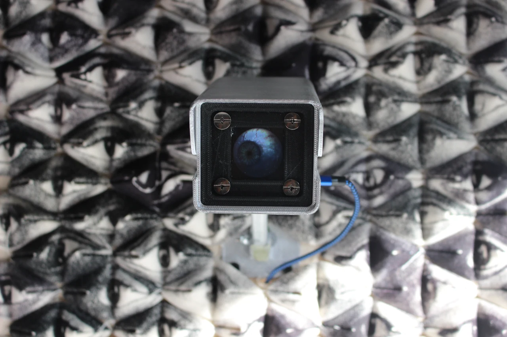
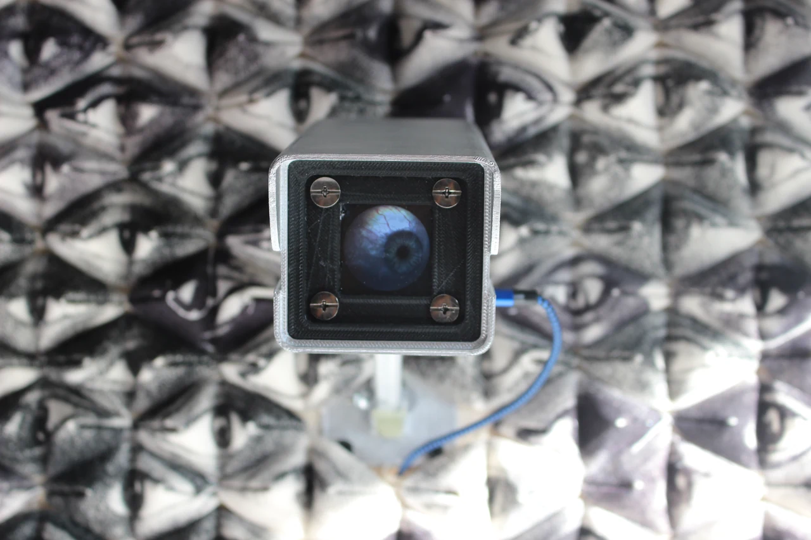
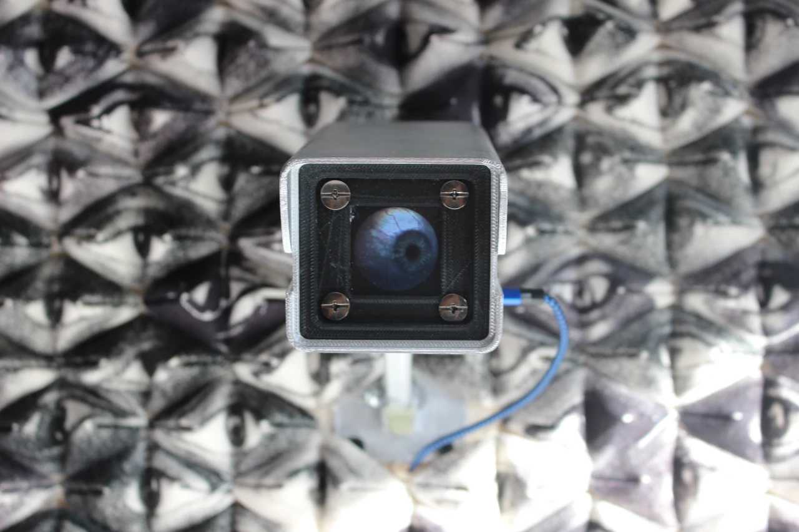
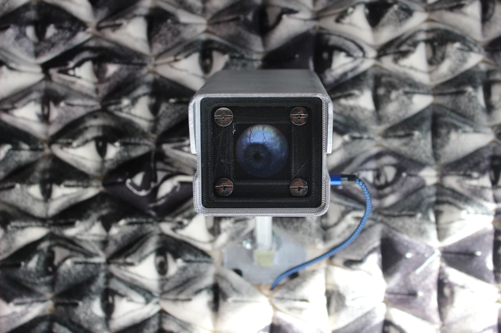
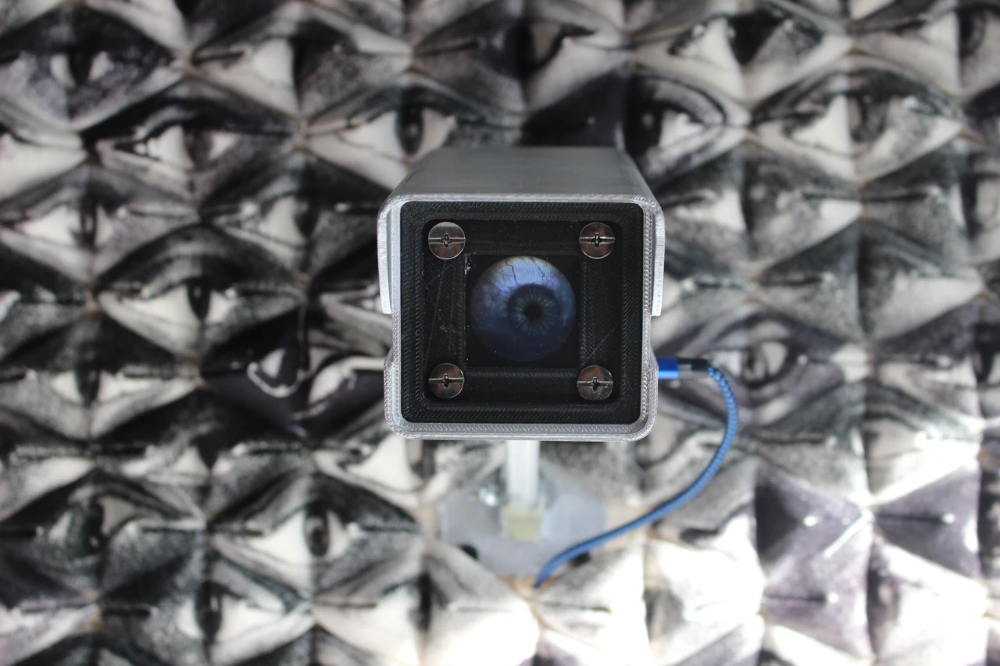

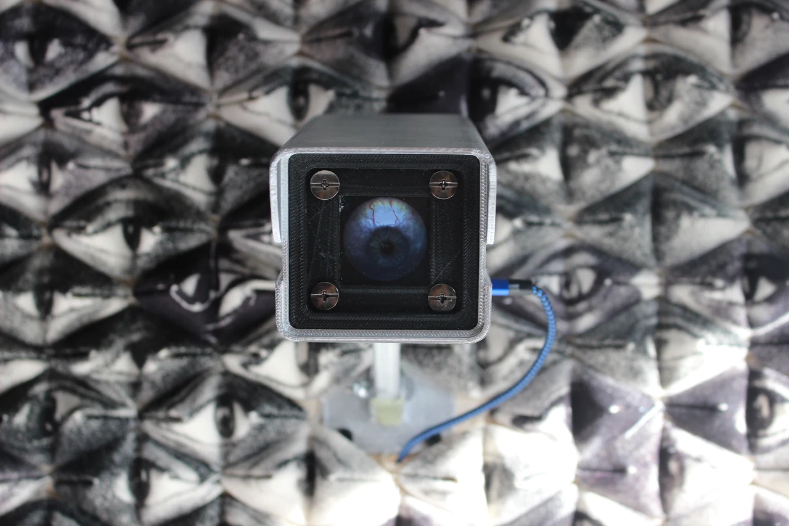
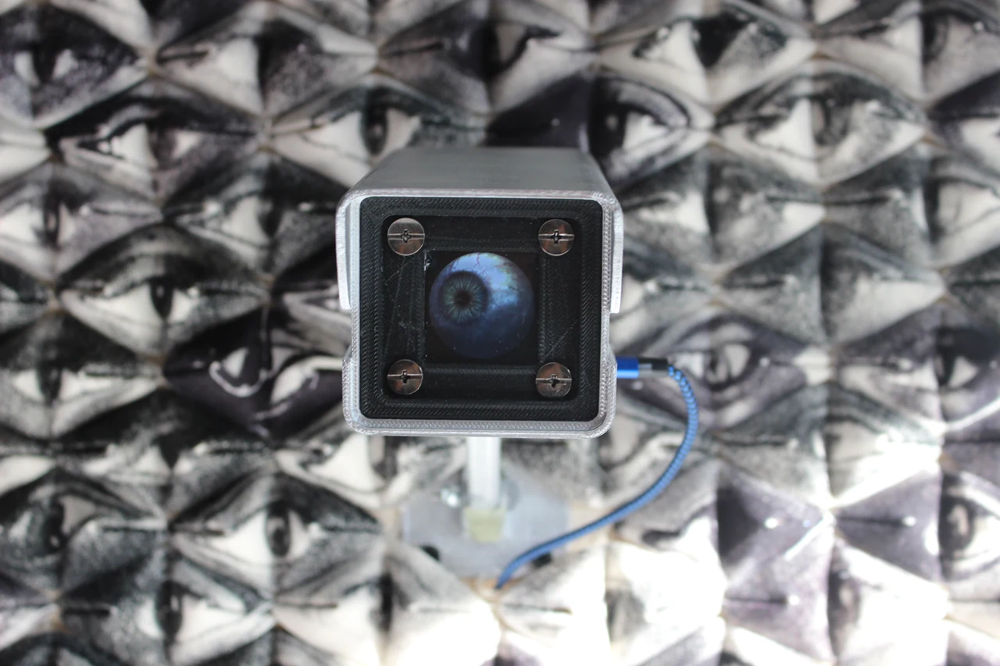
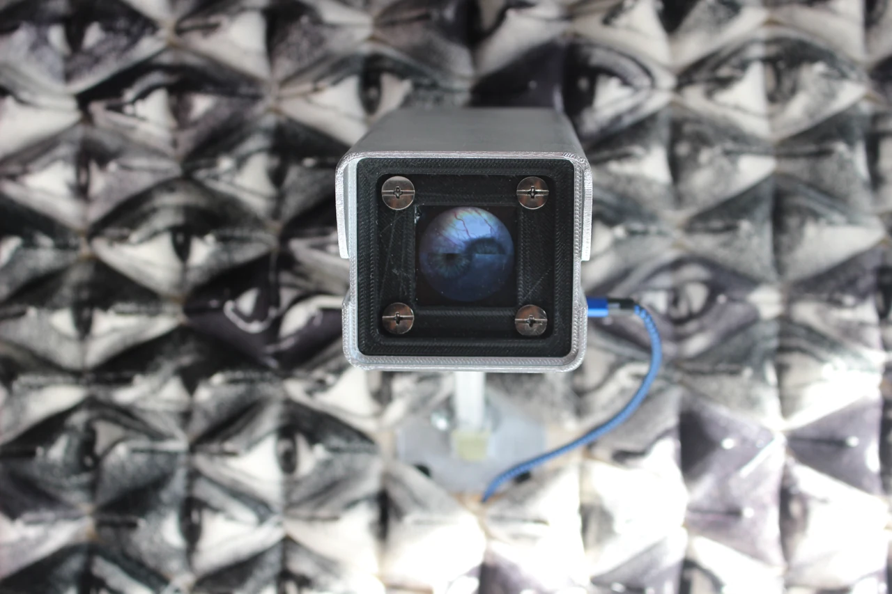
Concept
The project begins with a meditation on identity as something constructed, commodified, and endlessly reproduced by digital systems. Pre-trained machine-learning models generate virtual eyes and synthetic identification photos—symbols of algorithmic scrutiny and bureaucratic categorization. These images represent not portraits, but datafied stand-ins, mass-produced reflections of humanity reshaped by unseen power structures.
Drawing from Paglen’s language of invisibility and exposure, the project brings these algorithmic artifacts into the physical world through the tactile medium of screen printing. Each print retains precision while welcoming imperfection, echoing the tension between uniform surveillance practices and the unruly texture of lived identity. Stitched together, the printed fabrics form a material archive of individuals fragmented by the systems meant to define them.
Interactive elements intensify this dialogue. A Raspberry Pi-powered digital eye gazes outward, constantly shifting and mutating, mirroring the omnipresence of computational monitoring. A heat-sensing device reacts to the viewer’s presence—transforming them from passive observer to implicated participant. In this mutual exposure, the distinction between intruder and victim dissolves.
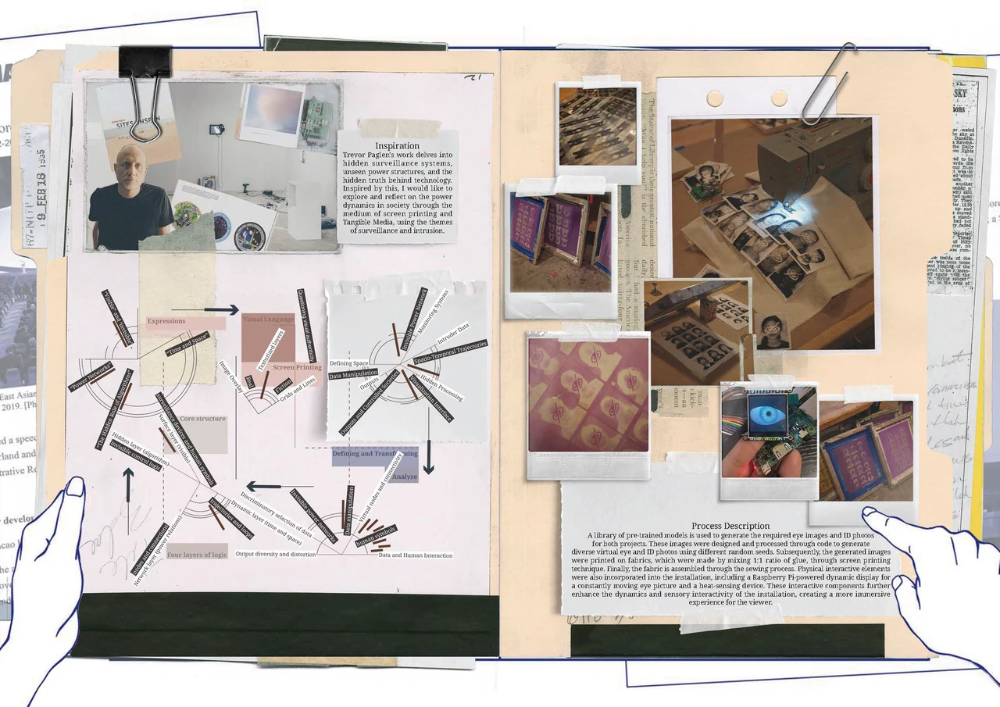
System
The installation consists of three key components:
Algorithmic Image Generation
Machine-learning models produce synthetic eye images and ID-like portraits.
Variations in model parameters metaphorically represent distortions, biases, and instability within identity-recognition systems.
Screen-Printed Textile Construction
Generated images are transferred onto custom fabrics through multi-layered screen printing.
Stitching and layered assembly create tactile metaphors for identity reconstruction, fragmentation, and erasure.
Interactive Surveillance Apparatus
A Raspberry Pi continuously displays a shifting, blinking eye that “watches” the space.
A heat-sensing module detects viewers in proximity, triggering visual or behavioral responses that implicate them within the system.
Together, these components create a loop of seeing and being seen, materializing the otherwise invisible exchange between observer and observed.
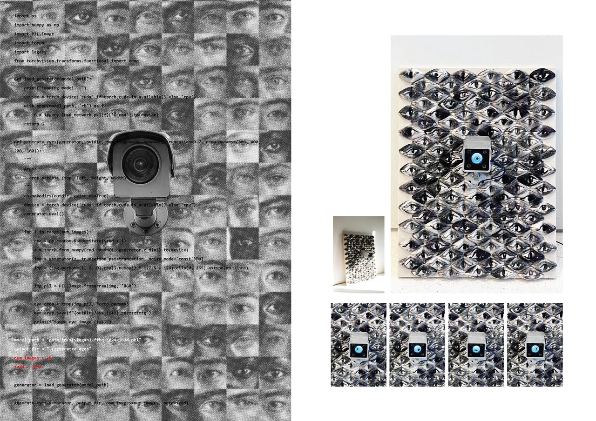
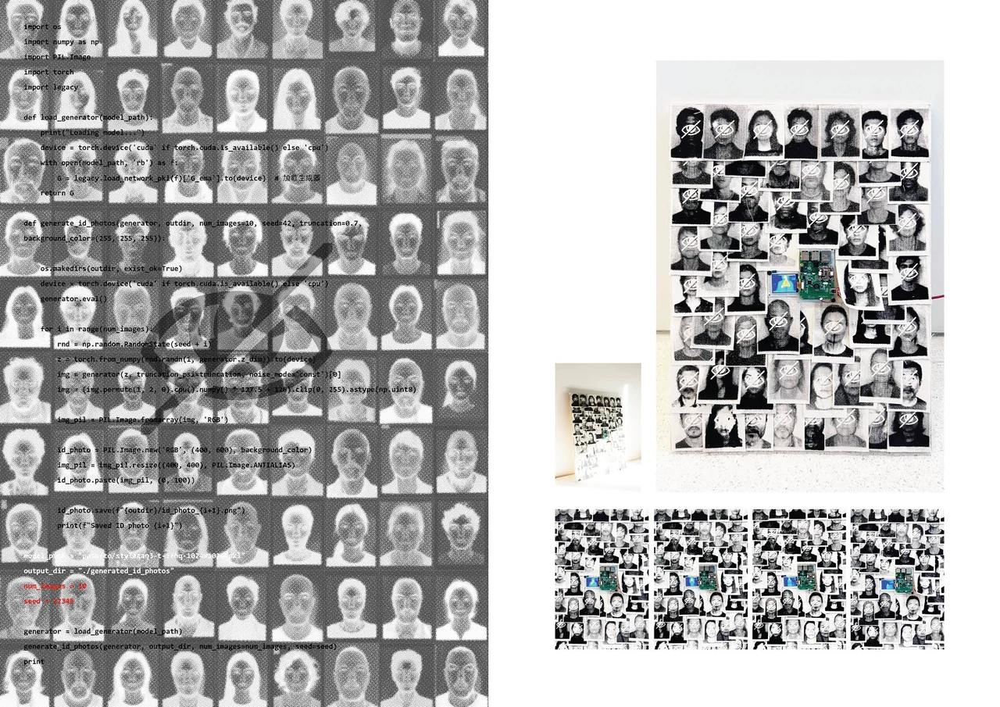
Outputs
The installation produces both digital and physical artifacts:
-
AI-generated eye images and ID portraits
Suggesting algorithmic attempts to fabricate identity. -
Screen-printed textiles
Where machine precision meets human imperfection, producing a hybrid aesthetic of control and resistance. -
Stitched fabric assemblages
Evoking passports, dossiers, and bureaucratic records—yet destabilized through seams and gaps. -
Live digital surveillance display
A computational “eye” that tracks, pulses, and mutates in real time.
Each output is a fragment of a system that simultaneously documents, distorts, and disciplines.
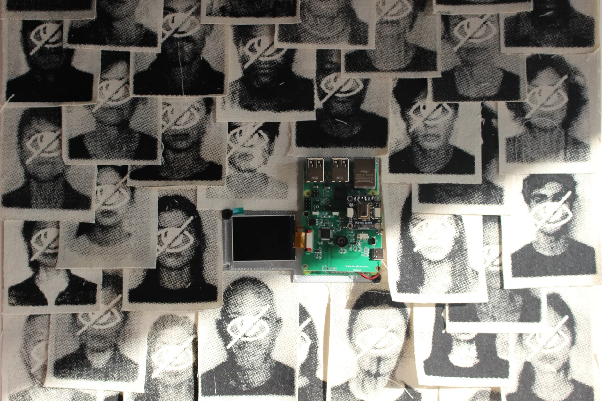
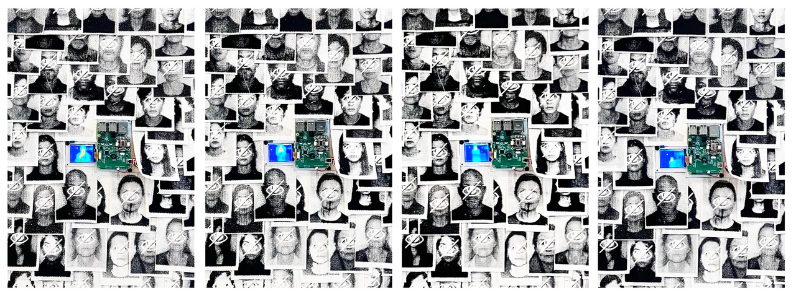
Reflection
Observer and Intruder is a meditation on identity in the era of pervasive surveillance. It examines how digital technologies reconstruct the self—flattening individuality into categories, datasets, and predictions. But it also highlights the agency and vulnerability embedded in the act of looking: viewers participate in the very dynamics they seek to critique.
By blending critical theory with tactile media, the project makes visible the invisible infrastructures of power that shape contemporary life. It asks audiences to reflect not only on the systems that surveil them, but on their own complicity in maintaining the architectures of observation.